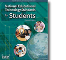
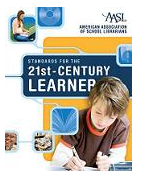
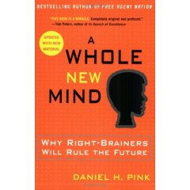
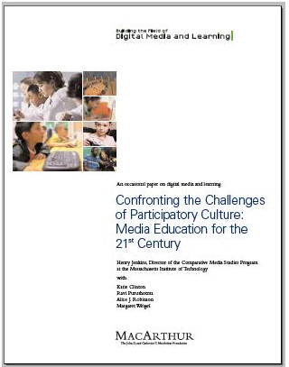
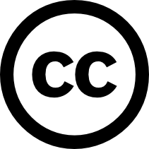
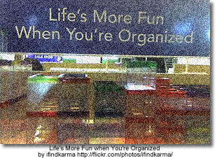

Information literacy
NETS
NETS - National Education Technology Standards for Students

- Creativity and Innovation
- Communication and Collaboration
- Research and Information Fluency
- Critical Thinking, Problem Solving, and Decision Making
- Digital Citizenship
- Technology Operations and Concepts
NETS Booklet (pdf)
Standards for the 21st-Century Learner
AASL Standards for the 21st-Century Learner
The standards adopted in 2008 by the American Association for School Libraries describe how learners use skills, resources, and tools to
- inquire, think critically, and gain knowledge;
- draw conclusions, make informed decisions, apply knowledge to new situations, and create new knowledge;
- share knowledge and participate ethically and productively as members of our democratic society;
- pursue personal and aesthetic growth.
A Whole New Mind
A Whole New Mind by Daniel Pink
A post from Doug Johnson outlines Pink' s thesis in A Whole New Mind and the necessary 'right-brain' senses we need in what Pink calls the Conceptual Age.
Pink acknowledges the outsourcing trend (Asia), as well as two other trends he labels Abundance and Automation. He suggests that readers ask themselves three questions about their jobs:
1. Can someone overseas do it cheaper?
2. Can a computer do it faster?
3. Am I offering something that satisfies the nonmaterial, transcendent desires of an abundant age? (Are you not just making toilet brushes, but toilet brushes that satisfy the user’s aesthetic sensibilities as well?)As a result of these trends, he believes we are shifting from the Information Age to the Conceptual Age. Successful players in this new economy will increasing be required to develop and use the right-brain abilities of high concept (seeing the larger picture, synthesizing information) and high touch (being empathetic, creating meaning). Happy news, perhaps, for those of us who never were all that good at the left-brain stuff in the first place.
More specifically, he suggests we work toward developing in ourselves (and I hope by implication, our students), six right brain “senses,” to complement our left-brain, analytic skills. He suggests we will need realize the value of:
1. Not just function, but also DESIGN
2. Not just argument, but also STORY.
3. Not just focus, but also SYMPHONY.
4. Not just logic, but also EMPATHY.
5. Not just seriousness, but also PLAY.
6. Not just accumulation, but also MEANING.
Doug Johnson revisits Pink's premise and adds a seventh sense, learning. He then goes to illustrate how schools might emphasis the six - now seven senses.
In the (Feb 2006) issue of School Administrator Daniel Pink interviews Tom Friedman on Education in the ‘Flat World’
According to Friedman,
"the greatest economic competition in the world going forward is not going to be between countries and countries. And it’s not going to be between companies and companies. The greatest economic competition going forward is going to be between you and your own imagination. Your ability to act on your imagination is going to be so decisive in driving your future and the standard of living in your country. So the school, the state, the country that empowers, nurtures, enables imagination among its students and citizens, that’s who’s going to be the winner."
Participatory Culture
Confronting the Challenges of Participatory Culture: Media Education for the 21st Century,
The paper first identifies three concerns which require the need for "pedagogical interventions":
The Participation Gap — the unequal access to the opportunities, experiences, skills, and knowledge that will prepare youth for full participation in the world of tomorrow
The Transparency Problem — The challenges young people face in learning to see clearly the ways that media shape perceptions of the world.
The Ethics Challenge — The breakdown of traditional forms of professional training and socialization that might prepare young people for their increasingly public roles as media makers and community participants.
The majority of the report addresses 11 "new skills" students need to be fully successful in the social networking environment:
- Play — the capacity to experiment with one’s surroundings as a form of problem-solving
- Performance — the ability to adopt alternative identities for the purpose of improvisation and discovery
- Simulation — the ability to interpret and construct dynamic models of real-world processes
- Appropriation — the ability to meaningfully sample and remix media content
- Multitasking — the ability to scan one’s environment and shift focus as needed to salient details.
- Distributed Cognition — the ability to interact meaningfully with tools that expand mental capacities
- Collective Intelligence — the ability to pool knowledge and compare notes with others toward a common goal
- Judgment — the ability to evaluate the reliability and credibility of different information sources
- Transmedia Navigation — the ability to follow the flow of stories and information across multiple modalities
- Networking — the ability to search for, synthesize, and disseminate information
- Negotiation — the ability to travel across diverse communities, discerning and respecting multiple perspectives, and grasping and following alternative norms.
Blogging
About Blogging
Using Blogs to support authentic learning in the classroom - a immense collection of resources for those educators wishing to learn more about blogging for themselves and/or their students. This collection includes links on the following:
- Educational Rationale for and Pedagogy of Blogging
- Student Safety and Responsible Blogging
- Evaluating Blogs - Rubrics
- Classroom-created Blogs/Student-created Blogs
- Blog Add-ins/Widgets - Items that can be added to student blogs
Go Ahead and Blog; The Experts Would Approve: Blogging technology allows people to become active participants in the Web and create interesting and functional sites rather than passively engaging in other people's information.
Blog2Learn an extensive wiki collection of resources, articles and professional development activities. From Anne, "I have found that blogs help us move away from thinking of writing as a 5 paragraph essay or a set of steps to move students through. Blogs give us an avenue to teach writing (blogging) as a cluster of complex thinking and writing behaviors that provide ownership to the student and the possibility of getting a multitude of responses from others". The page on significant comments will be of particular use to teachers who have started blogging with their students but want to encourage them to make well articulated, thoughtful comments.
Here’s My First Five Tips For Writing Better Blog Posts — What Are Yours? This blog post emphasis that blogging is not just about writing words but about holding conversations. The author suggest five ways to write great blog posts and creating and participating in meaningful online conversatons.
Blogging Platforms
- Edublogs
- How to set up a class blog on Edublogs or Learner Blogs
- Students as contributors on Edublogs: The Quick and Easy Way - learn how to use the power of linked-in gmail accounts to create a short cut for making individual contributing authors in Edublogs.
- The Edublogger Blog - a great place for tips about using Edublogs including embedding video and subscribing to blogs with rss.
- ClassBlogmeister
- How to set up a classroom blog using Class Blogmeister: Initial Setup - step-by-step instructions from Vicki Davis
- WordPress
- Blogger
Evaluating Blogs from David Warlick
Assessing Blog Posts from Will Richardson
Digital Storytelling
Storytelling
Storytelling Lesson Plans and Rubrics
Digital storytelling is....
Seven Steps for Digital Storytelling
Our students are ready to read and write information beyond words — to use the media technologies of our era for effective communication. Here are the steps that will help them do it.
Digital StoryTelling Tools
Powerful and Engaging K - 12 Projects with VoiceThread
VoiceThread - A school-wide project - excellent instructions on how to up a VoiceThread with several identities.
VoiceThread in the Classroom - A great SWOT analysis of the tool along with suggestions for use in the classroom. Some examples also provided.
VoiceThread and Comic Life - the Curriculum Consultants from the Living Sky School Division explain a joint project with a grade 2 class using Comic Life.
VoiceThread for Education - a wiki full of examples from K - College
Using VoiceThread for Digital Conversations - Everything you could ever want to know about VoiceThread - with excellent examples.
Video
Make Internet TV - This guide has step-by-step instructions for shooting, editing, and publishing online videos that can be watched and subscribed to by millions of people.
Video in the Classroom - digital storytelling in the elementary grades... and beyond!
Cartoon and Comic Book Tools
Comiqs - a wonderful easy to use online comic generators
More Comic Creators from Stephen's Lighthouse
More Tools
Alan Levine's 50 Web 2.0 Ways To Tell a Story
School-based Professional Development
Bready School Staff Development: Digital Storytelling Using a Variety of Tools
Creative Commons
Creative Commons
Creative Commons defines the spectrum of possibilities between full copyright — all rights reserved — and the public domain — no rights reserved. Our licenses help you keep your copyright while inviting certain uses of your work — a “some rights reserved” copyright.
Students should not only be encouraged to look for and respect the licenses of others but to use creative commons licensing in their own works.
Creative Commons in K - 12 Education This article begins by outlining U.S. Copyright Law but then goes on to explain how to obtain a Creative Commons license and some ways to find resources that are licensed with Creative Commons.
Ethical Use of Information
Understanding Copyright
At what point do concerns about safety become a fence preventing our students from participating in an increasingly flat world? Putting the ‘social’ into social networks allows us to freely exchange information. But with the free exchange of information comes the responsibility of how we share it, and how we give credit to the author of that information.
Check out this video, “A Fair(y) Use Tale” and learn some history of copyright
In the school library and classroom, we are often faced with the copyright challenges of when it is acceptable to copy something and how much of an item [book, website, music etc] we can copy. Faced with declining budgets and little time, we are tempted to go ahead and make the copies. But with the advent of file sharing, downloading and RSS, we must acknowledge and teach the ethics of information gathering and sharing.
Background on Canadian Copyright Legislation
Copyright Matters (the orange little booklet you should all have in your school)
Internet Citizenship from Media Awareness Network - overview and a list of links with more information about copyright and plagiarism.
Canadian Copyright Information - a set of links from Manitoba Education
Copyright Confusion
The Cost of Copyright Confusion for Media Literacy (pdf - 17 pages)
From the Executive Summary:
The fundamental goals of media literacy education—to cultivate critical thinking about media and its role in culture and society and to strengthen creative communication skills—are compromised by unnecessary copyright restrictions and lack of understanding about copyright law, as interviews with dozens of teachers and makers of media literacy curriculum materials showed.
The Generational Divide in Copyright Morality - David Pogue of the New York Times describes a discussion on copyright morality with college students:
Recently, however, I spoke at a college. It was the first time I’d ever addressed an audience of 100 percent young people. And the demonstration bombed.
In an auditorium of 500, no matter how far my questions went down that garden path, maybe two hands went up. I just could not find a spot on the spectrum that would trigger these kids’ morality alarm. They listened to each example, looking at me like I was nuts.
Finally, with mock exasperation, I said, “O.K., let’s try one that’s a little less complicated: You want a movie or an album. You don’t want to pay for it. So you download it.”
There it was: the bald-faced, worst-case example, without any nuance or mitigating factors whatsoever.
“Who thinks that might be wrong?”
Two hands out of 500.
Doug Johnson in his post, Paradox Land , makes some recommendations for changing the focus of how we teach about copyright and intelletual property because "The mindset that “if we don’t know for sure, don’t do it” does not fit the needs of either students or their teachers. Changes I am thinking about recommending include:
- Changing the focus of copyright instruction from what is forbidden to what is permitted.
- When there is doubt, err on the side of the user. (Are we being "hyper-compliant"?)
- Ask the higher ethical questions when the law seems to make little sense. (Look where it got Socrates. Well, yeah, there was that hemlock bit...)
- Teach copyright from the point of view of the producer, as well as the consumer. (Does having others using your work without authorization or remuneration change your perception of intellectual property issues?)
How to legally use images, music and videos can be found on the Copyright Friendly Images and Music Search Tools Page.
Sythesizing Information: The Thesis
Thesis...
...point of view of the author
...a premise to be maintained or proved
...the purpose of the research
...the basic argument
...an intellectual proposition
...the theme of the whole piece
...A proposition supported by research
What is a Thesis? - from Joyce Valenza the attributes of a good thesis, some great examples and a collection of links to other resources about developing a thesis.
Thesis Builder and Online Outline
Using Thesis Statements - this article debunks several myths about thesis statements
What's the Fuss About the Thesis? - a student made video about how to construct a thesis.
Teaching the process of design (or making student video projects interesting) - in this blog post the author discusses the importance of a thesis, a central idea, around which all design decisions are made.
Once a thesis is decided on, a concept for the production is formed that expresses the thesis and every design decision made during the production serves the thesis. This gives directors (or designers, or actors) a basic structure on which to base their production. Used correctly, a thesis can be the most powerful tool in a designer’s arsenal.
Analysis: Using evidence to support the thesis
Once in place the author then needs to provide the necessary evidence and accompaning citations to support the thesis.
Organizing Information

Organizing information
- Utilize a variety of visual organizers
- Take notes using point form and paraphrasing
- Create an outline
- Tag and describe bookmarks using a social bookmarking tool
Taking Notes
Note Cards - examples
Taking Notes - using the notecard method
The following two links are from Debbie Abilock's NoodleTools - many ideas and links for teaching students to paraphrase, quote and summarize.

Research Building Blocks: Notes, Quotes, and Fact Fragments (Grade 3 - 5)
The students learn the importance of finding the words in sentences and paragraphs that contain the facts they need for compiling their research. The students then move to putting those notes into their own words, avoiding plagiarism. Embedded in this lesson is an online activity where students can participate in the fact finding process.
Online Note-taking tools
ReadWriteThink Notetaker (Grade 3 - 5)
This hierarchical outlining tool allows students to organize up to five levels of information for reading and writing activities. During or after reading, the Notetaker can be used to compile and organize reading notes, research, and related ideas. During the writing process, students can use the tool to organize their information and plan texts in the prewriting stage and to review and structure their ideas during writing and revision.
Ubernotes - This web-based application focuses on just one thing; helping you write and then find your notes. A review of this application can be found at School Library Journal.
Best4C - online diagram tool that allows you to create, edit and share charts
Google Notebook
Clip and collect information as you browse the web:
- Clip useful information.
You can add clippings of text, images and links from web pages to your Google Notebook without ever leaving your browser window. - Organize your notes.
You can create multiple notebooks, divide them into sections, and drag-and-drop your notes to stay organized. - Get access from anywhere.
You can access your Google Notebooks from any computer by using your Google Accounts login. - Publish your notebook.
You can share your Google Notebook with the world by making it public.
NoteStar from 4Teachers
Designed specifically for students in grade 4 - 12 NoteStar is an Internet utility to assist in the preparation of research papers. Teachers and students can set up research projects with topics and sub-topics. Students may then take advantage of NoteStar's many features to collect and organize their notes and prepare their bibliography page.
The article Hitting the Books in McGill Reporter, Jan 2008 recommends the following two tools:
MyNoteIt
A note-taking tool for students that allows you to take notes directly in the web interface, or upload existing Word or OpenOffice documents, scanned images, handwritten notes and audio files into a searchable database. Also features an assignment calendar, a to-do list, a grade-tracker and add-ons for Facebook and cellphones.
Notecentric
An online note-taking application for Facebook. Its capabilities seem to be more limited than mynoteIT, but it has the advantage of operating through one of the best-known destinations on the web.
Creating the Outline
Using Outlines - this article discusses how to use outlines at the different states of the research including the working outline, the pre-writing outline and creating an outline to hand in.